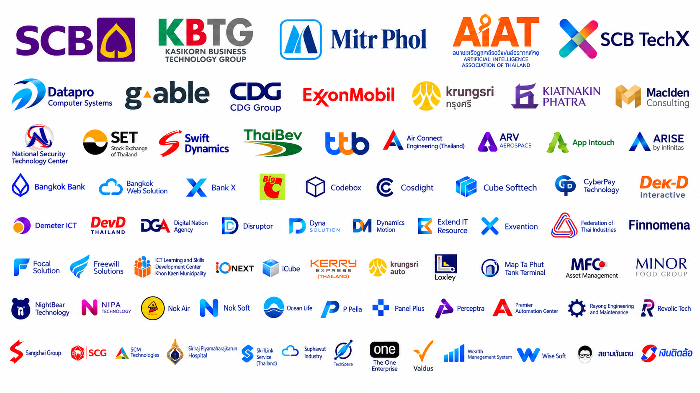

CSS 495 Work-Integrated Learning: project characteristics, assessment, industry collaboration, and searchable project analytics.
Projects may be work a company performs for a customer or for internal use. They may be part of the student’s assigned duties or an additional project. Students should work as a team where possible, including with students from other institutions, with each student’s role clearly identified.
Students experience real work before the senior-year industry pathway.
Students define topic, objectives, scope and responsibilities.
Students work with an organization on meaningful real work, preferably as part of a team.
Students complete, present and report the project outcome.
Topic examination and final examination, with project proposal and report submission.
Academic advisor, company mentor and programme examination committee assess objectives, outputs, roles, contribution, presentation and Q&A.
At least one advisor visit is planned, onsite unless the placement is fully online.
Selected organizations connected with recent ACS Work-Integrated Learning activities.
